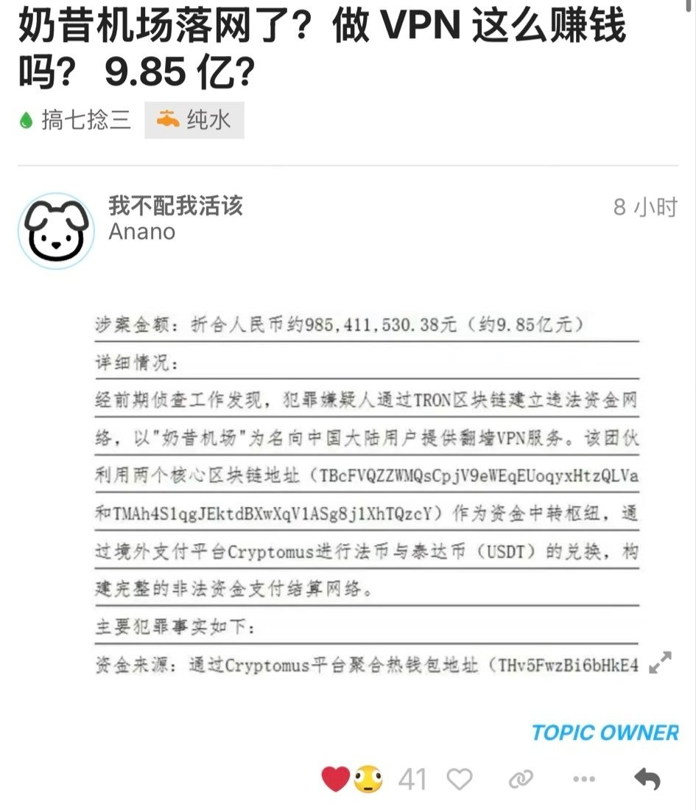

奶昔🥤
@realNyarime
@0xkakarot888 给孩子吓哭了😓

奶昔🥤
@realNyarime
这两天有不少朋友来问我，我统一回复一下，“此奶昔非彼奶昔”。
这个网传9.85亿的“奶昔机场”（Nexitally）与我本人没有任何关系，奶昔论坛不是该机场的官方论坛。 https://t.co/H8gUUBRHgp
0x卡卡撸特
@0xkakarot888
我去，这么赚钱？
不起眼的小生意赚了9.85 亿？
@realNyarime 不是你家的吧，大腿，哦不，大佬😂 https://t.co/cxgVE8ULy9